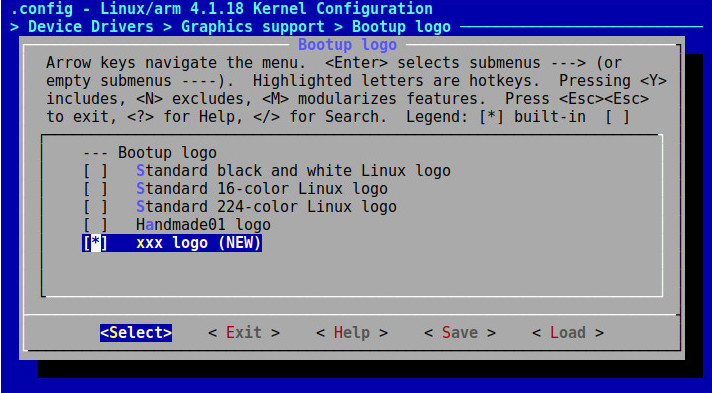

1. 把圖片轉成ppm(224色)並且放到drivers/video/logo/logo_xxx_clut224.ppm
2. drivers/video/logo/Makefile
obj-$(CONFIG_LOGO_XXX_CLUT224) += logo_xxx_clut224.o
3. drivers/video/logo/Kconfig
config LOGO_XXX_CLUT224
bool "xxx logo"
default y
4. drivers/video/logo/logo.c
const struct linux_logo * __init_refok fb_find_logo(int depth)
{
...
#ifdef CONFIG_LOGO_XXX_CLUT224
logo = &logo_xxx_clut224;
#endif
...
}
5. 如果發生找不到該變數時，修改drivers/video/logo/logo_xxx_clut224.c的變數名稱成logo_linux_clut224
const struct linux_logo logo_linux_clut224 __initconst = {
